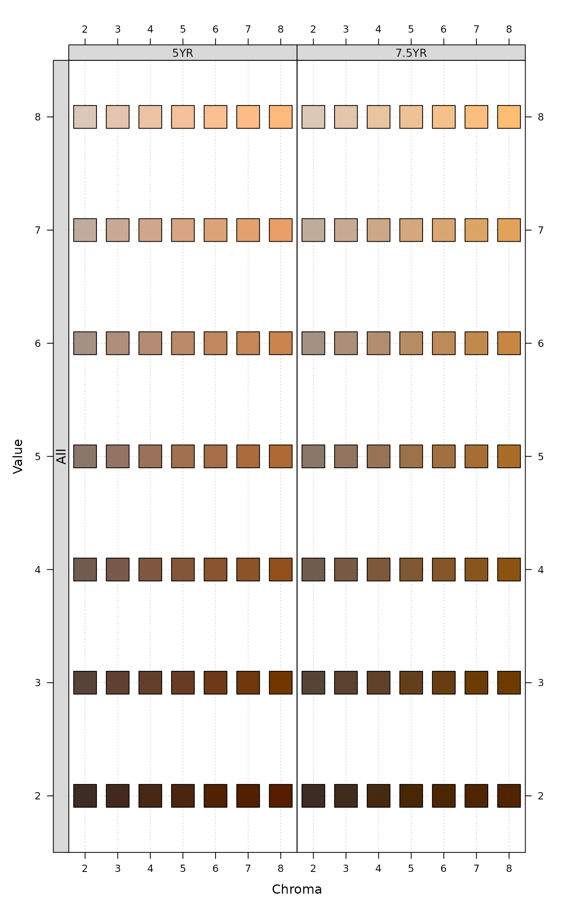
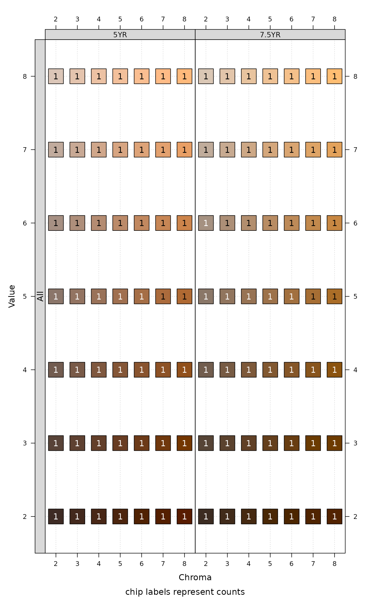
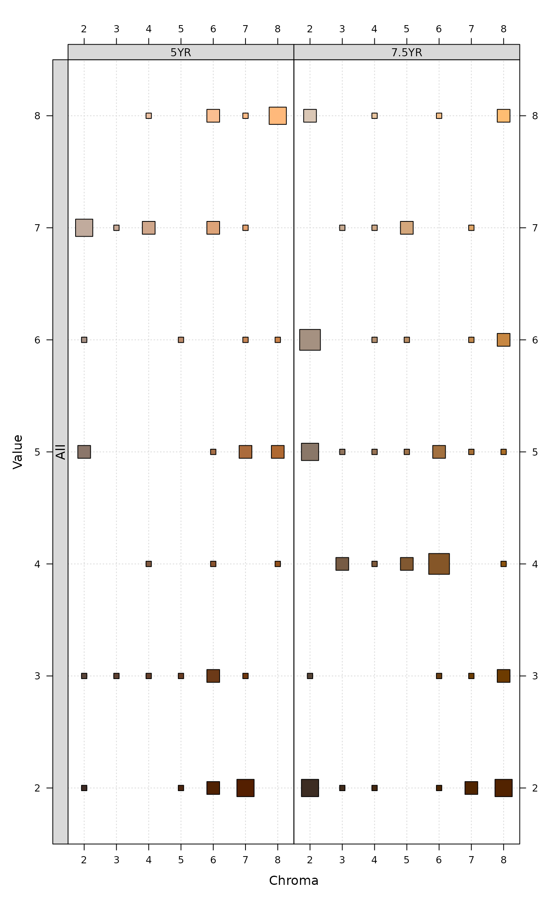
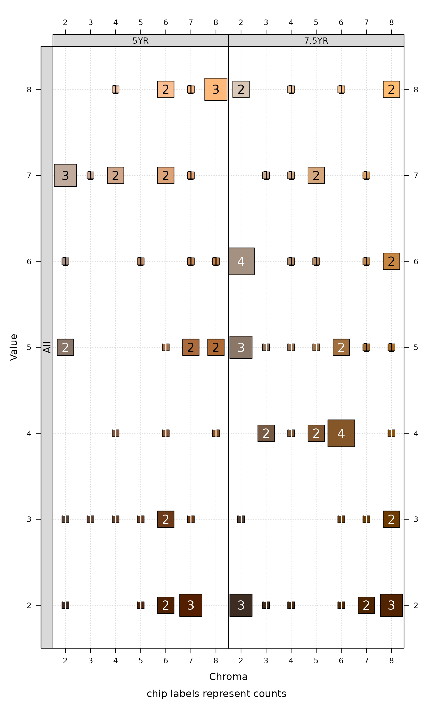
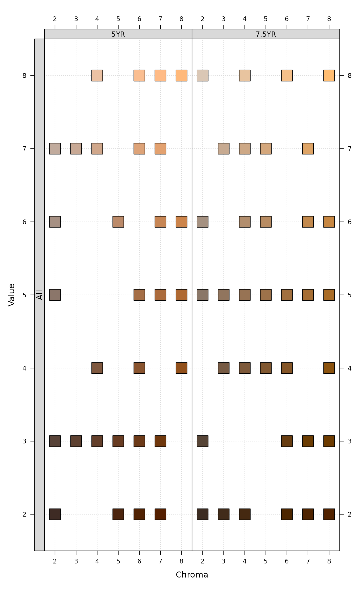
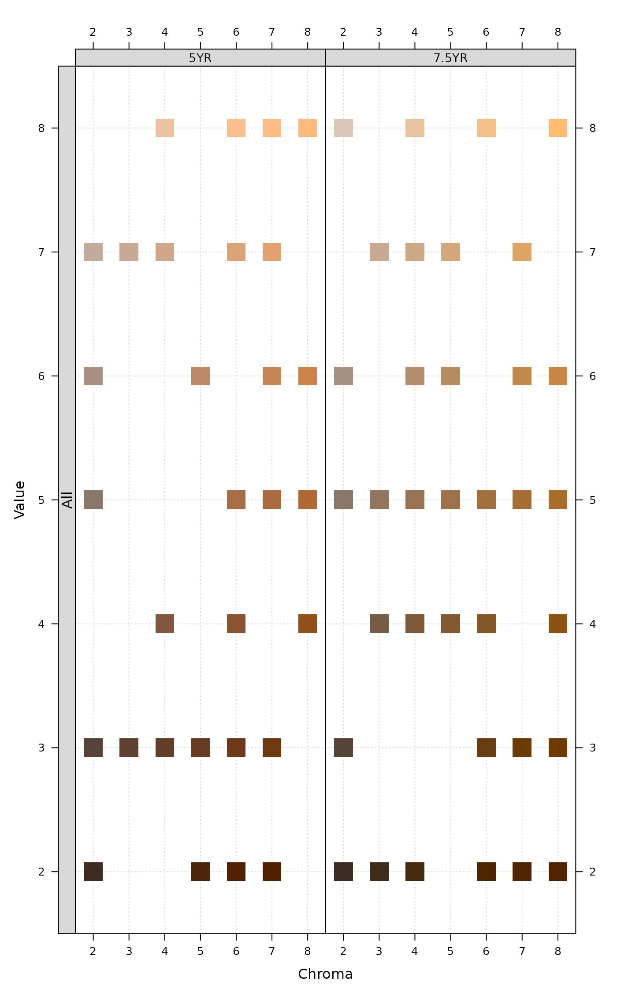
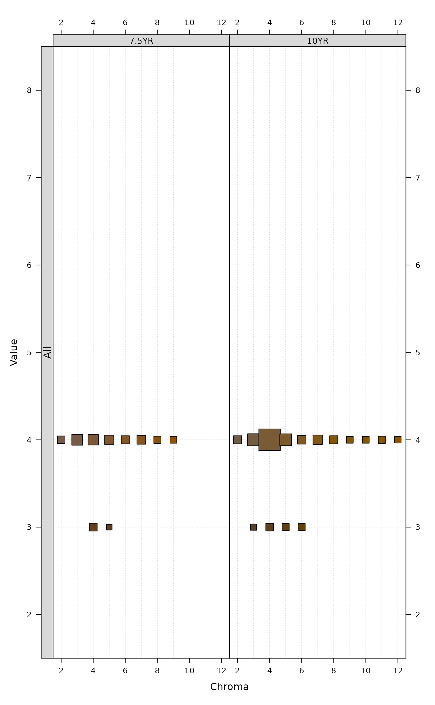
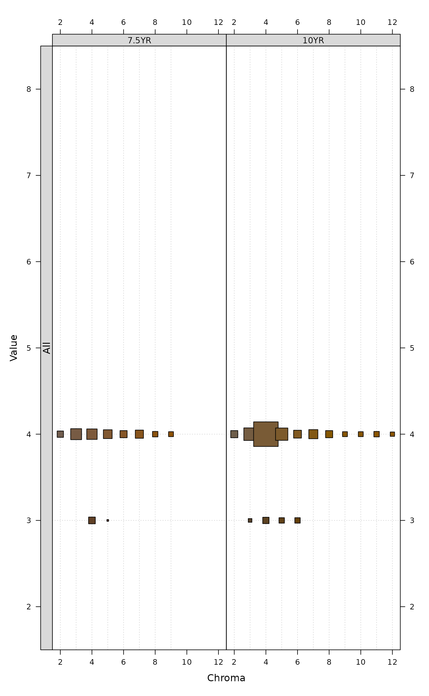
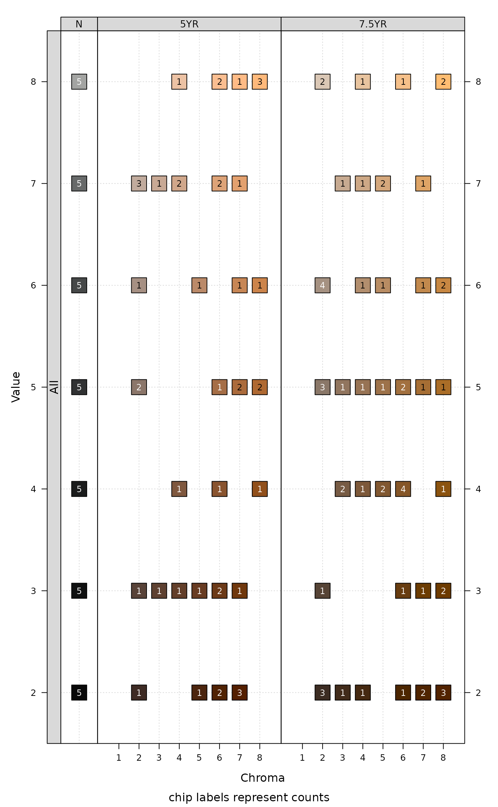

Visualize soil colors in Munsell notation according to within-group frequency.
Source:R/colorChart.R
colorChart.RdVisualize soil colors in Munsell notation according to within-group frequency.
Arguments
- m
character vector of color in Munsell notation ('10YR 4/6')
- g
factor describing group membership, typically a generalization of horizon designation, default value will generate a fake grouping that covers all of the colors in
m- size
logical, encode group-wise frequency with chip size
- annotate
logical, annotate color chip frequency
- chip.cex
scaling factor applied to each color chip
- chip.cex.min
lower limit for color chip frequency depiction
- chip.cex.max
lower limit for color chip frequency depiction
- chip.border.col
color for chip borders (outline)
- annotate.cex
scaling factor for chip frequency annotation
- annotate.type
character, within-group
countorpercentage- threshold
numeric within 0-1, color chips with proportion
< thresholdare removed
Examples
library(lattice)
# two hue pages
ric <- expand.grid(
hue = c('5YR', '7.5YR'),
value = 2:8,
chroma = 2:8
)
# combine hue, value, chroma into standard Munsell notation
ric <- sprintf("%s %s/%s", ric$hue, ric$value, ric$chroma)
# note that chip frequency-based size is disabled
# because all chips have equal frequency
colorChart(ric, chip.cex = 4, size = TRUE)

# annotation of frequency
colorChart(ric, chip.cex = 4, annotate = TRUE)

# bootstrap to larger size
ric.big <- sample(ric, size = 100, replace = TRUE)
# frequency can be encoded in size
colorChart(ric.big, chip.cex = 3)

colorChart(ric.big, chip.cex = 5, annotate = TRUE)

# constant size
colorChart(ric.big, chip.cex = 3, size = FALSE)

colorChart(ric.big, chip.cex = 3, size = FALSE, chip.border.col = 'NA')

# simulate colors based dE00 thresholding
p <- list(
list(m = '10YR 4/4', thresh = 10, hues = c('10YR', '7.5YR'))
)
# perform 500 simulations
s <- simulateColor(method = 'dE00', n = 500, parameters = p)
# result is a list, use the first element
colorChart(s[[1]], chip.cex = 4)

# increase the possible range of color chip sizes
colorChart(s[[1]], chip.cex = 4, chip.cex.min = 0.01, chip.cex.max = 2)

# slightly funky support for neutral hues
N <- sprintf('N %s/', 2:8)
cols <- c(rep(N, times = 5), ric.big)
# note special panel used to show neutral hues
colorChart(cols, size = FALSE, annotate = TRUE)

# filter proportions below given threshold
colorChart(cols, size = FALSE, annotate = TRUE, threshold = 0.01,
chip.cex = 4, annotate.type = 'percentage')